本項では、フリーフォームの範囲を選択することができる
なげなわツール、多角形ツール、マグネット選択ツールを学習します。
[なげなわツール]は、長方形選択、楕円形選択ツールと異なり、
決まった形をしていない対象物の輪郭などを選択したい場合に使用します。
選択したい範囲を囲むようにドラッグし、マウスボタンを離すと、ドラッグした範囲が選択されます。
素材フォルダ「PS04」から素材ファイル4_1_4.psdを開きましょう。
前項で学習した選択範囲のオプションも駆使して、グラスを選択します。
まずは[楕円形選択ツール]を使い、[コントロールパネル]の[ぼかし]を《0px》に設定し
グラスの口の部分を選択します。
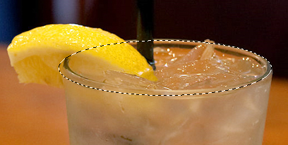
続いてこの写真のレモンの部分を[なげなわツール]を使って選択しましょう。
[ツールパネル]から[なげなわツール]を選択し、
[コントロールパネル]の[選択範囲に追加]を「オン」に変更します。
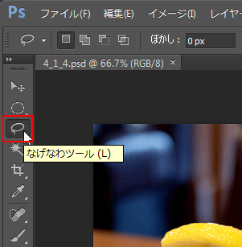
レモンの輪郭をなぞるようにドラッグして選択範囲を追加します。
ドラッグの手を離せば選択範囲が確定します。
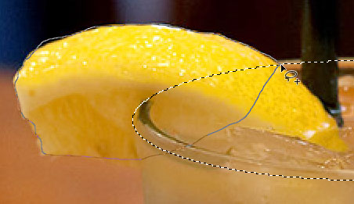
マウスでフリーに選択するには、操作の慣れが必要です。
選択がはみ出てしまったら、[コントロールパネル]の[現在の選択範囲から一部削除]に切り替えて
はみ出た箇所を修正しながら選択範囲を作成しましょう。
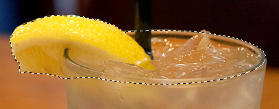
続いてグラス本体とストロー部分の選択範囲を追加します。
このような直線で構成されている箇所は[多角形選択ツール]が適しています。
[多角形選択ツール]は星座の星を結ぶような感覚で、
クリックしながら直線を結んで、多角形状の選択範囲を作るツールです。
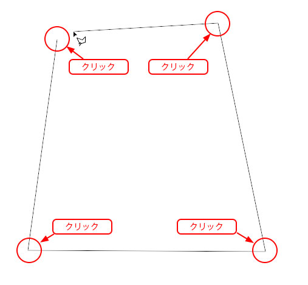
まずは[ツールパネル]の[なげなわツール]アイコンを長押しし、
[多角形選択ツール]を選択し、
[コントロールパネル]の[選択範囲に追加]を「オン」に変更します。
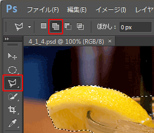
グラス本体の輪郭を選択していきます。
選択範囲の始点の位置にマウスカーソルが近づくと、
カーソルの右下に○印が表示されます。
この状態でクリックすると、始点と終点がつながり選択範囲が完成します。
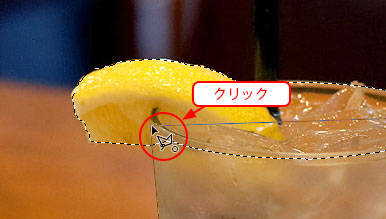
同様にストロー部分も[多角形選択ツール]を使い、選択範囲を作成します。
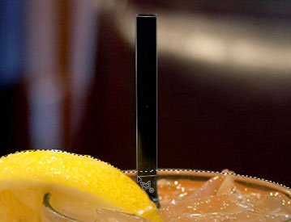
[マグネット選択ツール]は[なげなわツール]と使い方は似ていますが、
マウスでドラッグしている箇所の色の違いを自動的に判別し、
さながら磁石に吸い付くように選択範囲を作成します。
選択する対象と周囲の色の違いが強い場合、よりきれいに選択範囲が作成できます。
では[ツールパネル]の[多角形選択ツール]アイコンを長押しし、
[マグネット選択ツール]を選択し、
[コントロールパネル]の[選択範囲に追加]を「オン」に変更します。
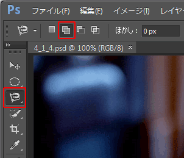
グラスに敷かれたコースターの部分を選択していきます。
画像の任意の位置をクリックして選択範囲を描き始め、
コースターをなぞるようにドラッグしていくと、画像の色の違いを判別し、
自動的にセグメント（ポイント）が追加され選択範囲が作成されます。
コツはゆっくりなぞることです。
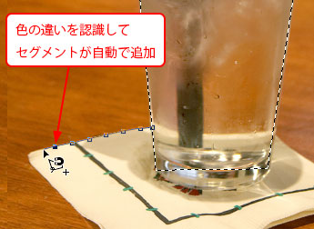
また、自動的に判別されない部分は、
クリックをすることで強制的にセグメントを追加することができます。
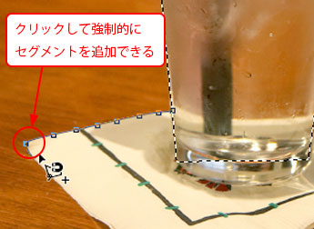
始点のセグメントにカーソルが近づくと、カーソル右下に○印が表示され、
そこでクリックすると、選択範囲が確定します。
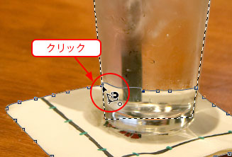
複数の選択範囲ツールを用途に合わせて使い分けることで、
グラスの選択範囲が作成できました。
選択範囲を反転させて、メニューバーの[編集]-[消去]から背景画像を消去しましょう。
今回の練習課題のように、選択範囲作成は1つの機能だけでなく、
複数の機能を使い分けて選択範囲を作成するのが一般的です。
その際、選択範囲のオプションの使い分けが重要になります。
以上でこの項の学習は終了です。
ファイルは閉じて次の項へ進んでください。